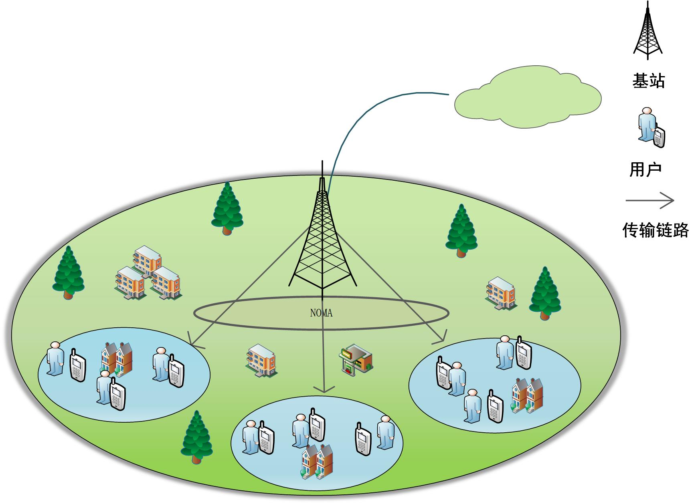
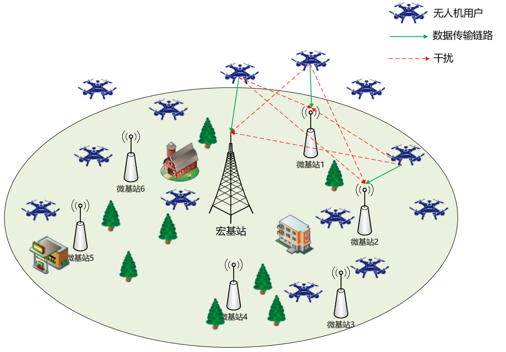
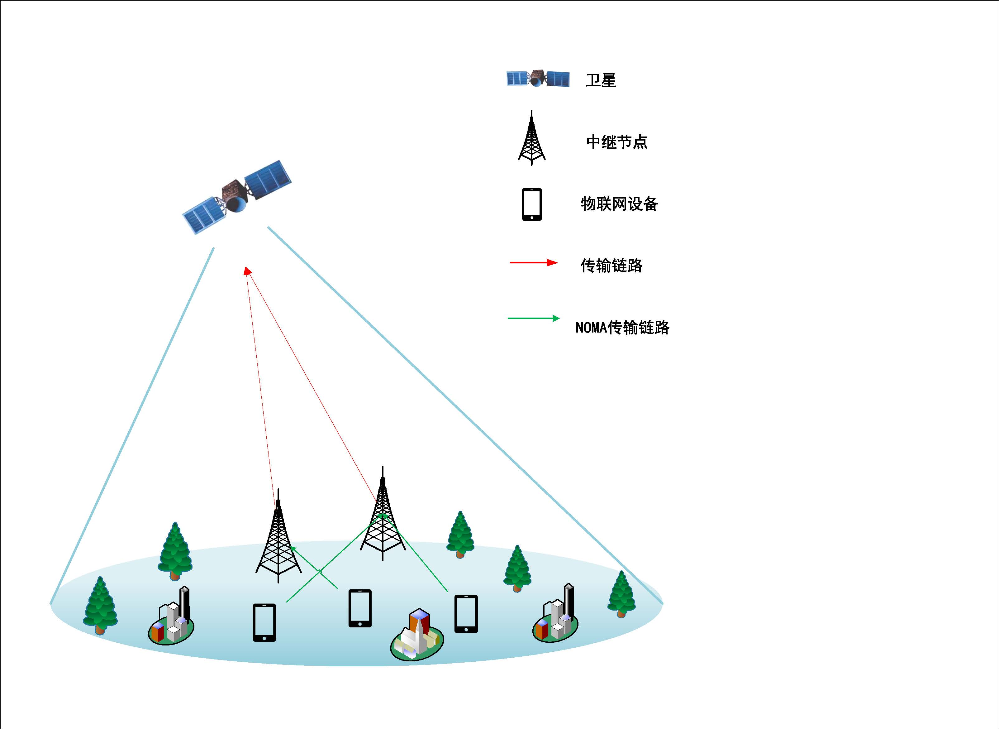

About Me

我是 邢华 (Hua Xing)。我于 2023 年 7 月毕业于 北京信息科技大学 (Beijing Information Science and Technology University)，获得计算机技术硕士学位。 目前就职于 中邮证券有限责任公司 信息技术部。
我硕士期间的研究方向主要是5G/6G、移动边缘计算、资源分配、网络性能评价与优化。
🔔 News
- 🎉 [2023/07] 获得 北京市优秀毕业生 荣誉。
- 🎉 [2023/07] 入职中邮证券有限责任公司信息技术部。
- 🎉 [2023] 我们的论文 "Data scheduling and resource allocation..." 发表在 Wireless Networks。
- 🎉 [2023] 我们的论文 "Game-Based Service Requests..." 被 VTC2023-Fall 接收。
- 🎉 [2023] 我们的论文 "Game Theory Based Task Offloading..." 被 WCNC 2023 接收 (CCF C)。
- 🎉 [2022] 获得 国家奖学金 (National Scholarship)。
- 🎉 [2022] 我们的论文 "Game-Based Channel Selection..." 发表在 Security and Communication Networks (CCF C)。
- 🎉 [2022] 我们的论文 "Cost-Efficient Edge Caching..." 发表在 China Communications (科技卓越期刊)。
- 🎉 [2021] 申请专利 "信道选择的方法、装置、电子设备及存储介质" (进入审查阶段)。
Publications
(*: first author, †: first student author - 请根据实际情况修改)

Dynamic Resource Allocation and Task Offloading for NOMA-enabled IoT Services in MEC
Security and Communication Networks. (第一作者, CCF C)

Game-Based Channel Selection for UAV Services in Mobile Edge Computing
Security and Communication Networks, 2022. (第一学生作者, CCF C)

Cost-Efficient Edge Caching for NOMA-enabled IoT Services
China Communications. (第一学生作者, 科技卓越期刊)

Data scheduling and resource allocation in LEO satellite networks for loT task offloading
Wireless Networks, 1-11, 2023.

Game-Based Service Requests and Channel Selection in Mobile Edge Computing
2023 IEEE 98th Vehicular Technology Conference (VTC2023-Fall)
Game Theory Based Task Offloading, Content Caching and Resource Pricing under Edge-Cloud Collaboration in 6G Network
2023 Wireless Communications and Networking Conference (WCNC). (CCF C)
🏅 Honors
- 北京市优秀毕业生 (2023)
- 国家奖学金 (2022)
- 学业二等奖学金 (2021, 2022, 2023)
- 国家励志奖学金 (2015-2016, 2016-2017)
- 专业一等奖学金 (2017-2018)
- 校级三好学生 (2015-2016, 2016-2017, 2017-2018)